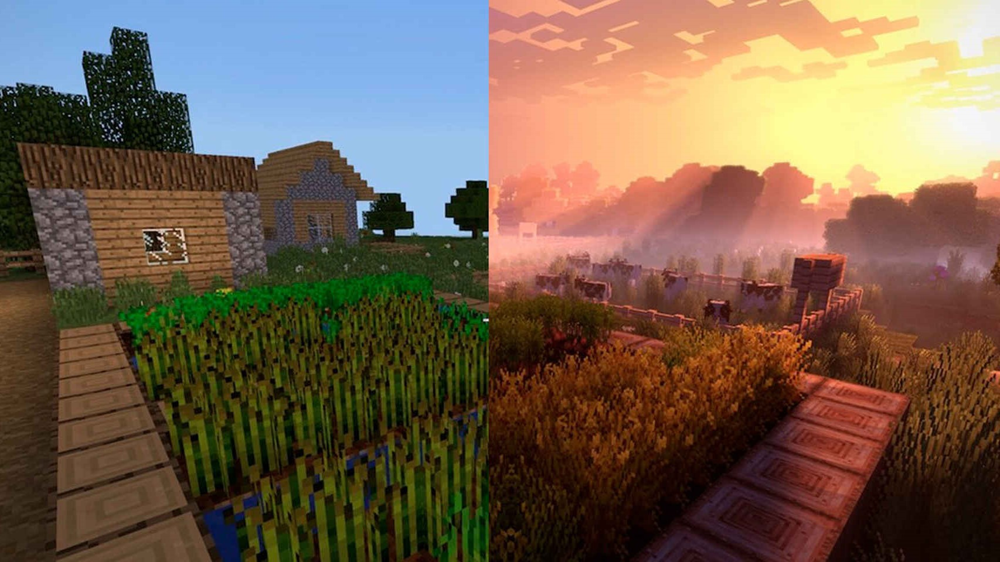

Minecraft Universe
Minecraft
Universe
Minecraft Universe
Minecraft
Universe

Descargar texturas para Minecraft. Sección donde encontrarás todas las actualizaciones sobre paquete de texturas, así como todos los nuevas texturas para Minecraft que salgan.

Los mejores Shaders para Minecraft Java Edition, para dotar al juego de un mayor realismo visual, añadiendo iluminación, animaciones. texturas y sombreado.
